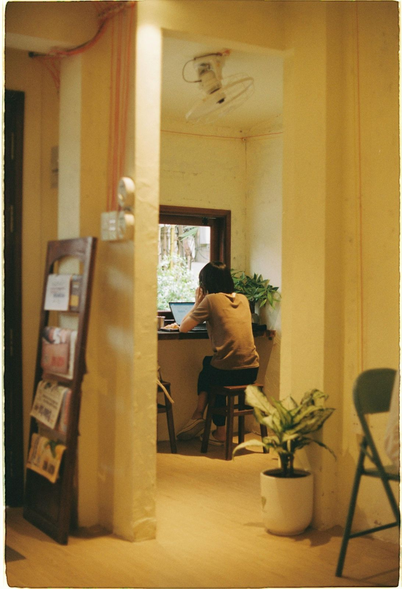

The world has changed. And so have you.
Layoffs. Disillusionment. Neurodivergent crashouts.
It didn't happen immediately. You might've had a gut feeling but you were so embedded in the simulation that you couldn't imagine differently.
"Very slowly, and then all at once."—Adapted from Ernest Hemingway's The Sun Also Rises
Then you woke up one day and suddenly, you couldn't recognise your surroundings. You didn't even know why you were there in the first place.
And no matter how hard you try, you can't seem to reconcile the person you are now with the world that no longer recognises you.
